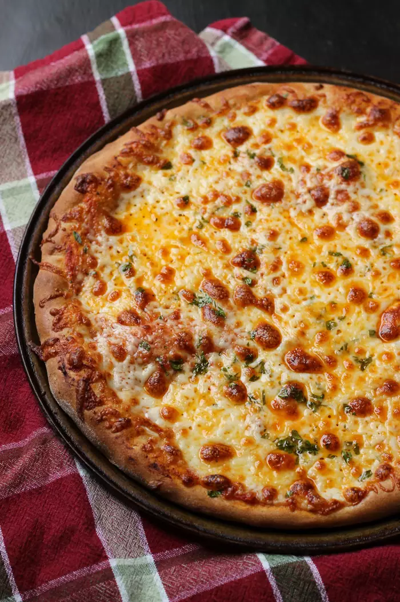

Pizza recipe

Description
This recipe provides an easy method for crafting a classic cheese pizza at home. Perfect for family dinners, gatherings with friends, or even a quick weeknight meal, this pizza offers versatility and deliciousness.
Whether its s a main dish for family dinners or gatherings, cut into smaller pieces for appetizers or party snacks, or enjoyed as leftovers for lunch or dinner the next day, this homemade cheese pizza can be stored in an airtight container in the refrigerator for up to 3-4 days. Reheat in the oven or microwave before consuming.
This recipe contains wheat (in the pizza dough) and dairy (in the cheese). Individuals with wheat or dairy allergies should avoid consuming this pizza or use suitable alternatives, such as gluten-free pizza dough or dairy-free cheese. Additionally, be cautious with toppings, as some may contain allergens such as nuts or soy. Always check ingredient labels for allergen information and consult with guests about their dietary restrictions before serving.
Ingredients
- 1 pre-made pizza dough (store-bought or homemade)
- 1 cup pizza sauce
- 2 cups shredded mozzarella cheese
- 1/4 cup grated Parmesan cheese
- Olive oil, for brushing
- Optional toppings: sliced tomatoes, sliced onions, sliced bell peppers, sliced mushrooms, olives, etc.
- Optional seasonings: dried oregano, dried basil, garlic powder, red pepper flakes
Steps:
- Preheat your oven: Preheat the oven to 475°F (245°C). If using a pizza stone, place it in the oven during preheating to ensure it gets hot.
- Prepare the pizza dough: If using store-bought dough, follow package instructions for preparation. If using homemade dough, roll it out on a floured surface to your desired thickness.
- Assemble the pizza: Place the rolled-out dough on a lightly greased pizza pan or parchment paper. Brush the surface of the dough with olive oil.
- Spread pizza sauce: Spoon the pizza sauce onto the dough and spread it evenly, leaving a small border around the edges.
- Add cheese: Sprinkle shredded mozzarella cheese evenly over the sauce. Optionally, add grated Parmesan cheese for extra flavor.
- Add toppings (optional): Customize your pizza with any desired toppings, such as sliced tomatoes, onions, bell peppers, mushrooms, or olives.
- Season (optional): Sprinkle dried oregano, dried basil, garlic powder, and red pepper flakes over the pizza for additional flavor.
- Bake the pizza: Transfer the assembled pizza to the preheated oven. If using a pizza stone, carefully slide the pizza onto the hot stone. Bake for 10-15 minutes, until the crust is golden brown and the cheese is melted and bubbly.
- Serve: Remove the pizza from the oven and let it cool for a few minutes before slicing. Slice into wedges and serve hot.